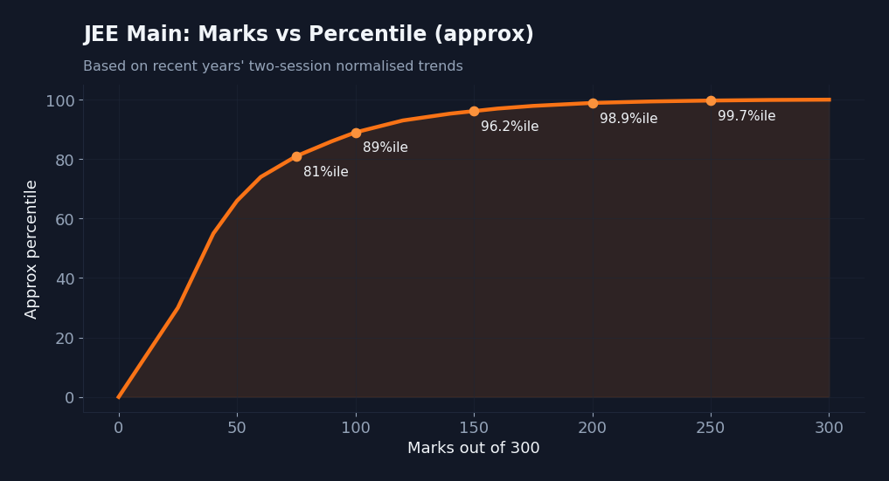
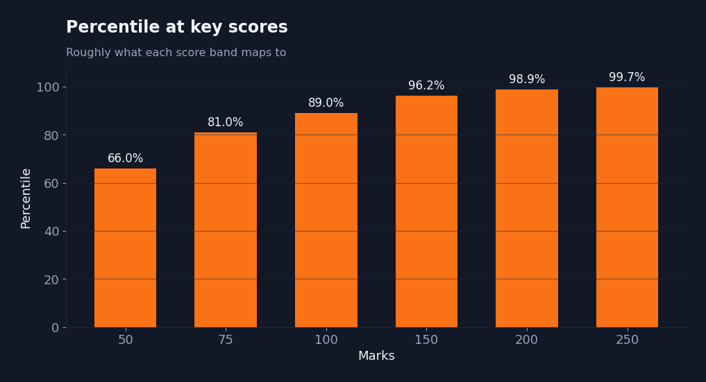
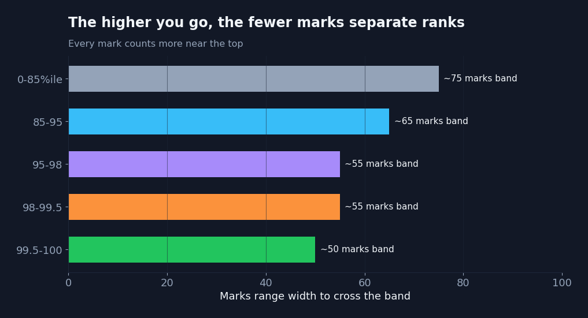

The single most searched JEE Main question is also the fuzziest: how many marks do I need for a good percentile? The honest answer is that it moves every year — but the shape of the curve stays remarkably stable, and that shape is what you should plan around.
Below is an approximate marks-to-percentile mapping based on the last few years of two-session normalised results. Treat it as a planning guide, not a guarantee: your real percentile depends on your session's difficulty and how many students appear.

Roughly what each score maps to
- ~250+ marks → around 99.5 percentile and above
- ~200 marks → around 98.5–99 percentile
- ~150 marks → around 95–96.5 percentile
- ~100 marks → around 88–90 percentile
- ~75 marks → around 80–82 percentile

Why the top is so crowded
Look at the curve again. From 0 to 150 marks, every extra 50 marks buys you a big percentile jump. After 150, the line flattens hard — the gap between 98.5 and 99.9 percentile is only a few dozen marks, but tens of thousands of ranks.
Near the top, a single careless mistake can cost you thousands of ranks. That is why accuracy, not just coverage, decides your rank.

How to use this
Don't chase a percentile — chase the marks that produce it, and know exactly where you are losing them. A quick mock on Dakhilaa gives you an estimated percentile and shows which topics are leaking the marks between you and your target. That turns a vague goal into a specific to-do list.